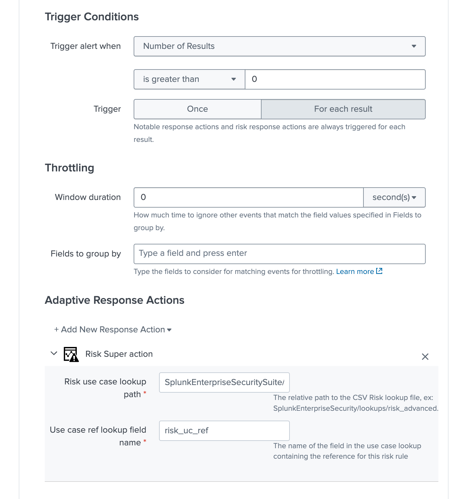

Deployment and base configuration¶
Installation¶
Install the Add-on using supported Splunk deployment methods, either via the UI for a standalone Splunk instance, or via the SHC deployer in a Search Head Context
Create your risk base alerting use case lookup referencial¶
Risk Base Lookup file requirements¶
Start by creating your Risk Based Alerting referencial lookup file, the CSV file requires two fields:
A use case unique reference, you can name the column either way, this should reference uniquely the Risk Rule use case, example:
risk_uc_idA JSON object defining the Risk Rules for the use case (syntax and options are described below), the name of the column is mandatory called
json_dict
For the purpose of the documentation, the following naming convention is used:
risk_uc_ref.csv
The Lookup file should be shared at the system level, and can be called in SplunkEnterpriseSecurity application context as:
| inputlookup risk_uc_ref.csv
JSON Risk Rule definition¶
The second field json_dict is designed to contain the well formed JSON object defining the Risk rules, with the following logic:
A field
search_namedefines the real name of the Risk Rule correlation search, it defines as well the value for the SplunksourceMetadata (handled by the collectrisk command)One or more JSON objects define the
risk_object,risk_object_type,risk_messageandrisk_scoreOne or more JSON objects define the
threat_objectandthreat_object_type
A first JSON Risk definition example¶
Let’s assume:
Our Risk Rule correlation generates security events for an endpoint, using the CIM convention
dest: the risk object value isdest, the type of the risk object issystemWe associate a
risk_scoreof 10 with this risk objectFinally, we generate a
risk_messagewhich will be expanded automatically using therisk_objecttoken
Our JSON object:
[{"search_name": "Threat - UC-EDR-001 - Rule"}, {"risk_object": "dest", "risk_object_type": "system", "risk_score": 10, "risk_message": "Security event detected on endpoint dest=$risk_object$"}]
Defining an additional risk object¶
Additionally, our Risk Rule correlation search renders a user information, we can complete our JSON rule with an additional JSON object:
{"risk_object": "user", "risk_object_type": "user", "risk_score": 20, "risk_message": "Endpoint security event detected involving user=$risk_object$"}
Our JSON definition is now:
[{"search_name": "Threat - UC-EDR-001 - Rule"}, {"risk_object": "dest", "risk_object_type": "system", "risk_score": 10, "risk_message": "Security event detected on endpoint dest=$risk_object$"}, {"risk_object": "user", "risk_object_type": "user", "risk_score": 20, "risk_message": "Endpoint security event detected involving user=$risk_object$"}]
If:
Any of the risk_object is available as part of Risk Rule correlation search results, a new risk event will be created accordingly
As we have two risk objects, a single result from the correlation search can potentially lead to the generation of 2 risk events
Any field available as part of the correlation search result, is available in the risk event too
Defining the threat objects¶
As for the risk objects, we can have one of more combinations of threat objects, for example:
Our correlation search renders a process value, the
threat_objectisprocess, thethreat_object_typeisprocess(the first is the value, the second the category)In addition, it renders the hash value of the process, the
threat_objectisfile_hash, thethreat_object_typeishash
Each threat JSON object will look like:
the first threat object:
{"threat_object_field": "process", "threat_object_type": "process"}
the second threat object:
{"threat_object_field": "file_hash", "threat_object_type": "hash"}
Our final JSON definition is now:
[{"search_name": "Threat - UC-EDR-001 - Rule"}, {"risk_object": "dest", "risk_object_type": "system", "risk_score": 10, "risk_message": "Security event detected on endpoint dest=$risk_object$"}, {"risk_object": "user", "risk_object_type": "user", "risk_score": 20, "risk_message": "Endpoint security event detected involving user=$risk_object$"}, {"threat_object_field": "process", "threat_object_type": "process"}, {"threat_object_field": "file_hash", "threat_object_type": "hash"}]
Let’s pretty print:
[{
"search_name": "Threat - UC-EDR-001 - Rule"
}, {
"risk_object": "dest",
"risk_object_type": "system",
"risk_score": 10,
"risk_message": "Security event detected on endpoint dest=$risk_object$"
}, {
"risk_object": "user",
"risk_object_type": "user",
"risk_score": 20,
"risk_message": "Endpoint security event detected involving user=$risk_object$"
}, {
"threat_object_field": "process",
"threat_object_type": "process"
}, {
"threat_object_field": "file_hash",
"threat_object_type": "hash"
}]
Note:
You can fill the lookup in pretty print format
Our final lookup referencial¶
Finally, our lookup is now:
risk_uc_ref,json_data
edr-001,[{"search_name": "Threat - UC-EDR-001 - Rule"}, {"risk_object": "dest", "risk_object_type": "system", "risk_score": 10, "risk_message": "Security event detected on endpoint dest=$risk_object$"}, {"risk_object": "user", "risk_object_type": "user", "risk_score": 20, "risk_message": "Endpoint security event detected involving user=$risk_object$"}, {"threat_object_field": "process", "threat_object_type": "process"}, {"threat_object_field": "file_hash", "threat_object_type": "hash"}]
Complete the lookup with all Risk Rule correlation searches.
Using the Risk Super alert action¶
Now that we have configured our RBA lookup, the Risk Super alert action needs to get called at the Risk Rule correlation level, this gets configured via the Correlation Search Editor providing 2 information:
uc_ref_fieldwhich defines the name of the field containing the use case reference in both the correlation search results and the use case lookup referencialuc_lookup_pathwhich defines the Splunk home relative system path to the lookup file
For example, in our case:
uc_ref_field:risk_uc_refuc_lookup_path:SplunkEnterpriseSecuritySuite/lookups/risk_uc_ref.csv
And that’s it! The entire knowledge is contained in the lookup file, from the Splunk UI this looks like:
{kind=link}